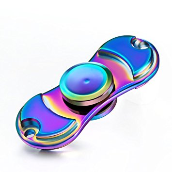
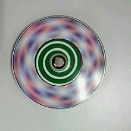

This season's hottest toy is marketed as an antidote for attention deficit hyperactivity disorder, anxiety and autism but it's also being banned in classrooms across the country. "Fidget spinners" are small, ball-bearing devices that the user can rotate between his or her fingers. The momentum of the toy provides a pleasing sensory experience, according to user reviews, while the challenge of tossing, transferring and twirling the spinners has spawned an entire universe of instructional YouTube videos. [How Fidget Spinners Work: It's All About the Physics]
Many spinners are marketed as aides for individuals with anxiety, autism and ADHD; Cppslee's spinner marketing patter on Amazon, for example, promises greater concentration for people with those conditions, plus an opportunity to "bring out that creative genius lying deep within you." [Why Fidget Spinners Are So Hot (and Where to Buy Them)] Unsurprisingly, these claims are probably overblown, scientists say. "Using a spinner-like gadget is more likely to serve as a distraction than a benefit for individuals with ADHD," said Mark Rapport, a clinical psychologist at the University of Central Florida who has studied the benefits of movement on attention in people with ADHD.
